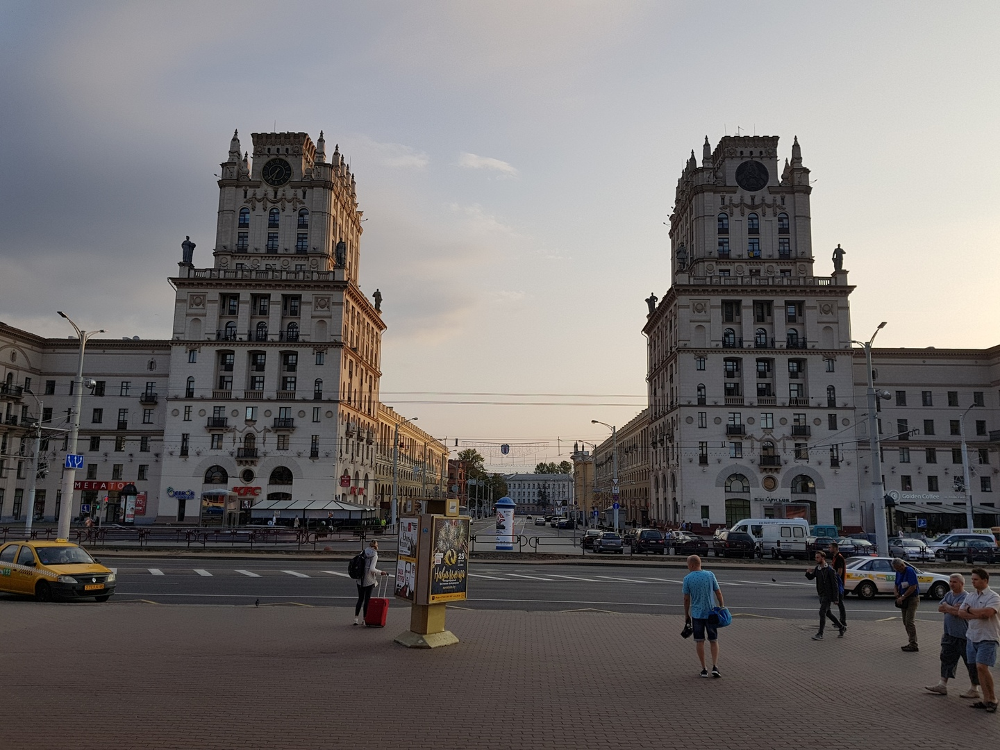

<style>

  /* Demo styles */
  html, body {
    background: #fff;
    margin: 0;
  }

  body {
    border-top: 4px solid #eee;
  }

  .content {
    color: #777;
    font: 12px/1.4 "helvetica neue", arial, sans-serif;
    max-width: 820px;
    margin: 20px auto;
  }

  h1 {
    font-size: 12px;
    font-weight: normal;
    color: #222;
    margin: 0;
  }

  p {
    margin: 0 0 20px
  }

  a {
    color: #22BCB9;
    text-decoration: none;
  }

  .galleria-info-description a {
    color: #bbb;
  }

  .cred {
    margin-top: 20px;
    font-size: 11px;
  }

  .galleria {
    height: 432px;
    max-width: 820px;
  }

</style>

<script>
    $(document).ready(function () {
        add_photos_to_gallery(photos_gallery);
        Galleria.loadTheme('photo-gallery/galleria.folio.js');
        Galleria.run('.galleria');
    });
</script>

<div class="galleria" style="margin: auto">
  <div id="photos_gallery_container_id"></div>
  <!--a href="../images/others/Minsk/01.jpg">
    
  </a-->
</div>